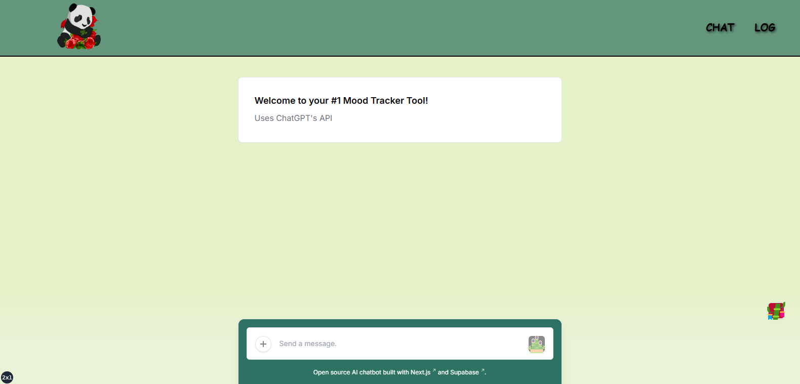
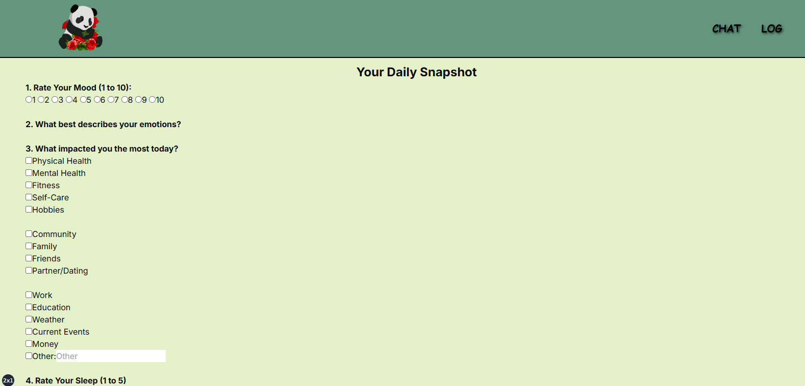
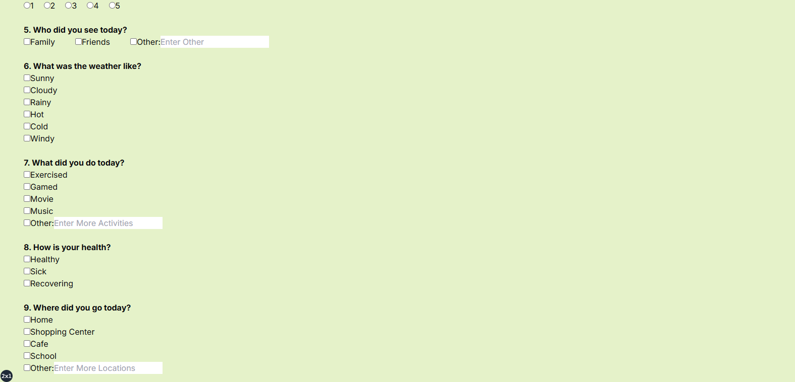
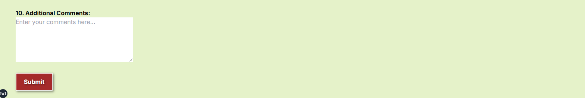

Emily's Personal Web Hub
December 2024
Personal Project
Inspired by my passion for UI/UX design and programming, I decided to partake a personal programming project during break. To further enhance my web development and problem-solving skills, I decided to code a personal website using HTML, CSS, and JavaScript. Design wise, I decided to create a navigation bar with 5 tabs: Home, About, Experience, Portfolio, and Contact. The Home page includes an image of me, professional summary, and link to my resume. The About page includes my education, skills, and crucial college courses. The Experience page involves my work experience and activities. The Portfolio page combines my CS and UI/UX design projects and coding experiences. The Contact page provides my LinkedIn, primary email, phone number, and GitHub repository.
A Human-Centered Study: Twitter Sketching & Prototyping
December 2024
Project
Sketched and prototyped a new and more user-friendly version of Twitter. Created a user story, conducted an expert review, and designed paper and digital wireframes, mockups, and an interactive prototype for Twitter's mobile and desktop versions. This was a team effort.
A Human-Centered Study: Twitter User Research & Personas
November 2024
Project
Conducted user research and created a persona for Twitter. Recruited and interviewed 5 participants, following with brief analysis on Figma and ending with a persona design. Created and followed an interview protocol, recorded interview notes, and reflected throughout the processes. Since no user interface is perfect, design improvements were suggested. This was a team effort.
Hack at UCI: ZotHacks - Mind Bloom Project
November 1, 2024 - November 3, 2024
Place: 2nd out of 13 teams | Acceptance Rate: less than 13%
Designed and coded a web application called Mind Bloom in 12 hours. Used ChatGPT's API to develop a database & chatbot to track & provide insights/feedback for individuals' moods based on a survey to tackle procrastination. Worked on the front-end UI mainly with TypeScript, Tailwind CSS, & HTML. Created a project proposal, devpost with a brief requirements specification, pitch deck for presentation, and a GitHub repository for team contributions. Formally presented our project to multiple judges, mentors, and other groups. Application uses the HTTP url: http://localhost:3000/.

Fig 1. Chat Page



Fig 2. Survey Page
A Human-Centered Analysis of Instagram
October 2024
Project
Conducted a comprehensive analysis of Instagram's interface to evaluate its adherence to usability and accessibility principles using Human-Computer Interaction (HCI) frameworks. Applied W3C's accesibility principles and usability principles in "Designing the User Interface" by Ben Shneiderman. Identified key strengths and areas for improvement to enhance user experience for diverse audiences, including older users.
Pacman 2.0
January 2023 - June 2023
Capstone Senior Project
Progammed an enhanced version of Pacman with my groupmate in HTML, CSS, and JavaScript. Designed and coded multiple levels (10) and maps (10), receiving posive feedback. As the levels increase, the maps get larger and more complex with the addition of ghosts. The process of building was creating a project proposal, building the maps/UI, coding the movement of the ghosts and Pacmans (we had an option for a multiplayer mode as well), etc. From this process, I learned how to effectively collaborate and communicate with my teammate to finish the project in the given time frame successfully. If we had more time, I would've wanted to add an option to choose how many ghosts you want for each level and map. Game could be accessed through a unique IP address, which I unfortunately don't have access to anymore.